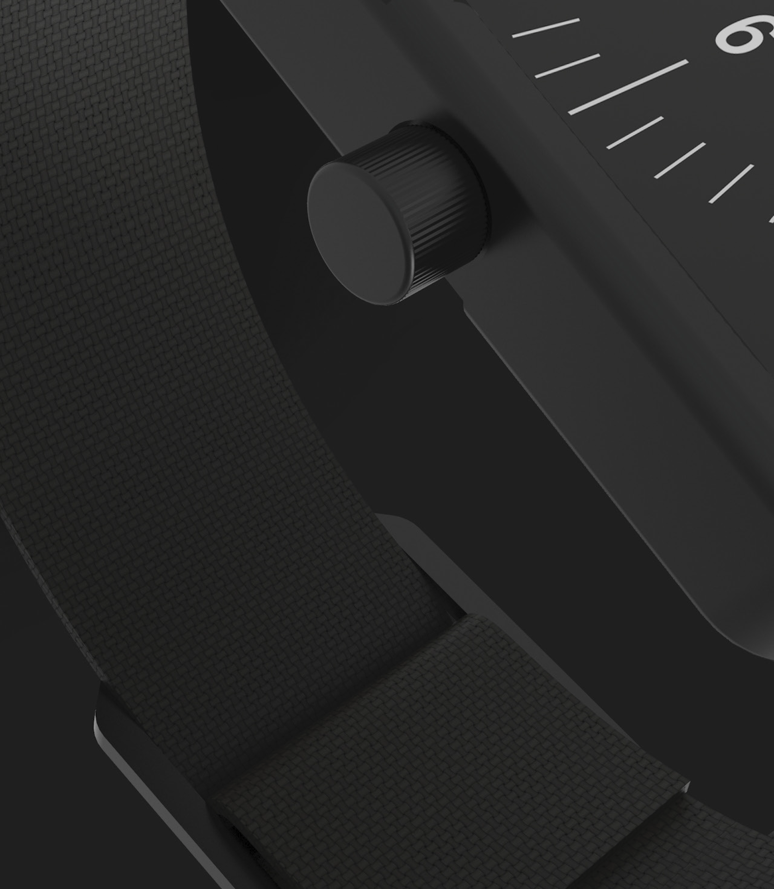
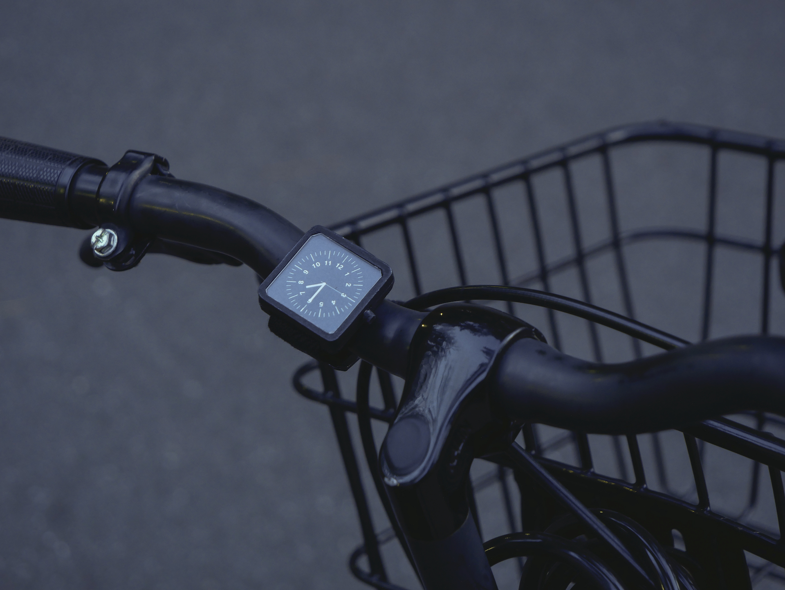

<!DOCTYPE html>
<html>
</html>

<head>
  <meta charset="UTF-8">
  <title>Juliette Collin</title>
  <meta name="viewport" content="width=device-width, initial-scale=1">
  <link rel="stylesheet" href="juliettecollin-projetsS9.css">

</head>

<body>
<section class="content-container ">

  <div class="content-orange">

        <div class="header">Juliette Collin © 2020</div>

        <a href="juliettecollin-projetsS9.html" class="retour">Retour</a>
        <a href="#abri" class="texte-projet">Repère<br>
            <em>2019</em><br>
            Repère est une montre de voyage. au design simple et ergonomique. Le dessin de son attache lui permet d’être enlevée et réglée facilement. Elle peut s’attacher aussi bien sur un sac que sur un guidon de vélo. Le boitier et la boucle sont en aluminium anodisé et la sangle en nylon.
          </a>
        </div>

  <div class="content-violet">

    <div class="flex-container-projet">
      <div>
                  
      </div>

      <div>
        
      </div>
      <div>
        
      </div>
      <div>
        
      </div>

      <div>
        
      </div>

      <div>
        
      </div>


    </div>        

  </div>
</section>    

</body>

